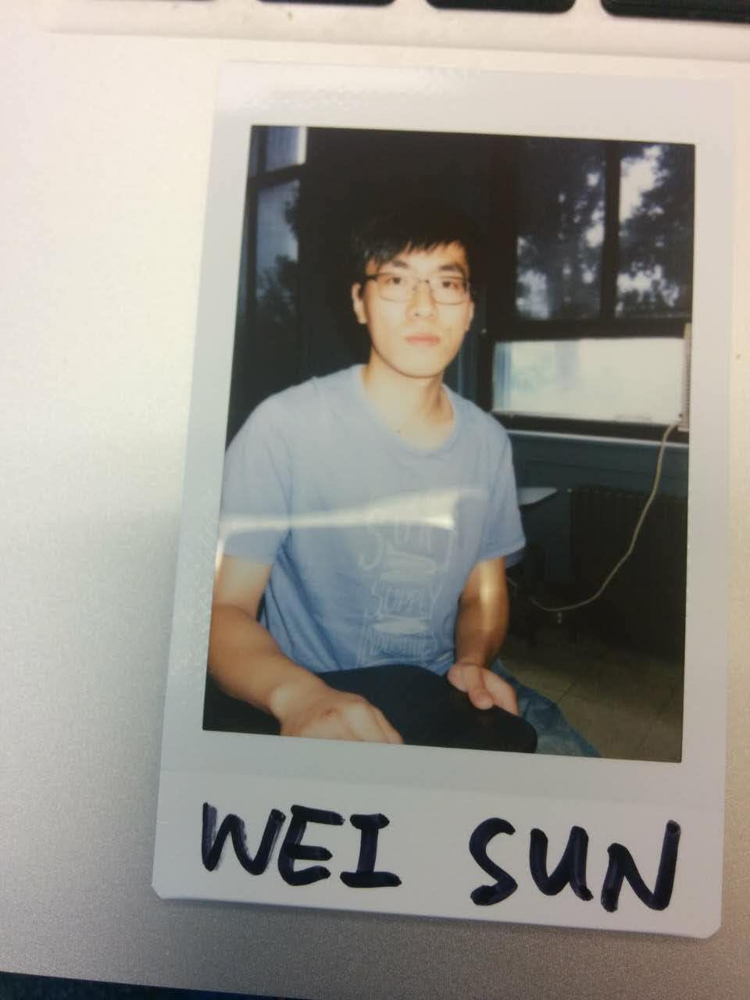
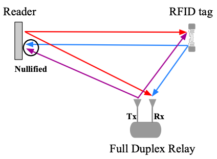
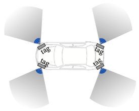
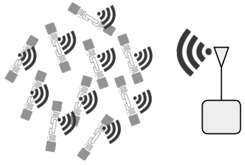
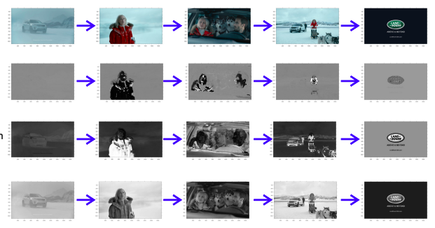
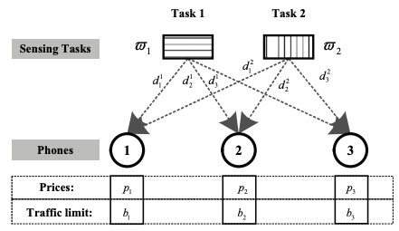
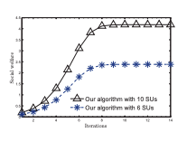
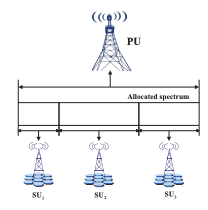
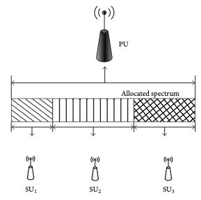

|  |
Wei Sun Ph.D. Student Department of Computer Science and Engineering The Ohio State University
Email: sun.1868@osu.edu |
 | Distributed Optimal Scheduling in UAV Swarm Network Wei Sun IEEE International Conference on Consumer Communications and Networking Conference (CCNC), January 2021 (to appear) |
|  | Destructive Full Duplex Relay for Commodity RFID system Wei Sun IEEE International Conference on RFID, October 2020 |
|  | Allergie: Relative Vehicular Localization with Commodity RFID System Wei Sun, Kannan Srinivasan IEEE International Conference on RFID, October 2020 |
|  | Embracing collisions: enabling parallel channel estimation with COTS passive backscatter tags Jiaqi Xu, Wei Sun, Arjun Bakshi, Kannan Srinivasan Proceedings of the Workshop on Light Up the IoT, October 2020 |
 | Towards High Throughput Wireless Network with Directional Antenna Wei Sun arXiv preprint arXiv:2003.02235, March 2020 |
|  | Multimodal content analysis for effective advertisements on Youtube Nikhita Vedula, Wei Sun, Hyunhwan Lee, Harsh Gupta, Mitsunori Ogihara, Joseph Johnson, Gang Ren, Srinivasan Parthasarathy IEEE International Conference on Data Mining, November 2017(ICDM) |
|  | Crowdsourcing Sensing Workloads of Heterogeneous Tasks: A Distributed Fairness-Aware Approach Wei Sun, Yanmin Zhu, Lionel M. Ni, Bo Li IEEE Proceedings of ICPP, September 2015 |
|  | An efficient distributed algorithm for spectrum allocation in multi-hop cognitive radio networks Wei Sun, Yanmin Zhu 2015 IEEE 23rd International Symposium on Quality of Service (IWQoS) |
|  | A distributed spectrum sharing algorithm in cognitive radio networks Wei Sun, Jiadi Yu, Tong Liu IEEE Proceedings of ICPADS, December 2014 |
|  | Distributed Spectrum Sharing in Cognitive Radio Networks: A Pricing-Based Decomposition Approach Yanmin Zhu, Wei Sun , Jiadi Yu, Tong Liu , Bo Li International Journal of Distributed Sensor Netowrks, December, 2014 |
Teaching Assistant
- Artificial Intelligence at The Ohio State University
- Computer Architecure at Shanghai Jiao Tong Unviersity
Awards
- 2013-1016 Graduate Scholarship Shanghai Jiao Tong Unviersity
- 2013 Excellent Undergraduate Student
- 2010 National Encouragement Scholarship, China